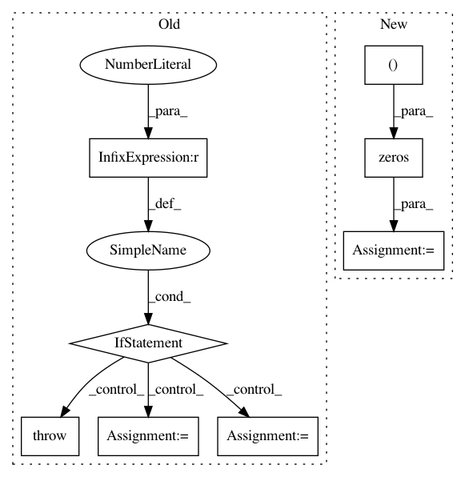

c96af58e6ab2f85626e51a331e8479da49329f0e,deepchem/models/tensorflow_models/__init__.py,TensorflowClassifier,predict_proba_on_batch,#TensorflowClassifier#Any#Any#,654
Before Change
self.eval_graph.output, feed_dict=feed_dict)
batch_outputs = np.asarray(data[:n_tasks], dtype=float)
// reshape to batch_size x n_tasks x ...
if batch_outputs.ndim == 3:
batch_outputs = batch_outputs.transpose((1, 0, 2))
elif batch_outputs.ndim == 2:
batch_outputs = batch_outputs.transpose((1, 0))
else:
raise ValueError(
"Unrecognized rank combination for output: %s " %
(batch_outputs.shape,))
// Note that softmax is already applied in construct_grpah
outputs = batch_outputs
return np.copy(outputs)
After Change
return loss
def fit(self, dataset, nb_epoch=10, max_checkpoints_to_keep=5,
log_every_N_batches=50, **kwargs):
Fit the model.
Parameters
----------
In pattern: SUPERPATTERN
Frequency: 3
Non-data size: 8
Instances
Project Name: deepchem/deepchem
Commit Name: c96af58e6ab2f85626e51a331e8479da49329f0e
Time: 2017-01-18
Author: joegomes@stanford.edu
File Name: deepchem/models/tensorflow_models/__init__.py
Class Name: TensorflowClassifier
Method Name: predict_proba_on_batch
Project Name: epfl-lts2/pygsp
Commit Name: b660849bcff934f16d08913f2157a9a7bb7e3a0b
Time: 2016-09-06
Author: lionel.martin@epfl.ch
File Name: pygsp/graphs/barabasialbert.py
Class Name: BarabasiAlbert
Method Name: __init__
Project Name: kundajelab/dragonn
Commit Name: 9c158b87f5fb2dca1ed95884e667ab2fc218e1b7
Time: 2017-05-01
Author: jisraeli@stanford.edu
File Name: dragonn/models.py
Class Name: SequenceDNN
Method Name: deeplift